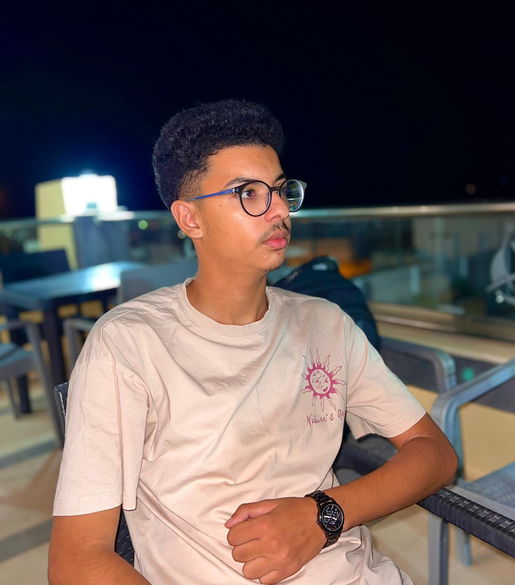

hi, i'm yassine waari .
20 years old .
I love the world of development and how things are built with code. I'm excited to learn more and improve my skills every day.
i created this web page to
this is me :

i stady computer science in isi kef .
this is my university :
you can find in it all my projects and my accomplishments in this domain
this is also some of my other work :
app project :
it's a app for deaf people to help them stady meanly and well integrate in the social life .
3\my resume
Motivated and detail-oriented web developer
with a passion for creating user-friendly
websites and applications. Experienced
in HTML, CSS, JavaScript, and GitHub.
Eager to continue learning and improving
skills in front-end and back-end development.
Strong problem-solving abilities and
a desire to contribute to innovative tech projects.